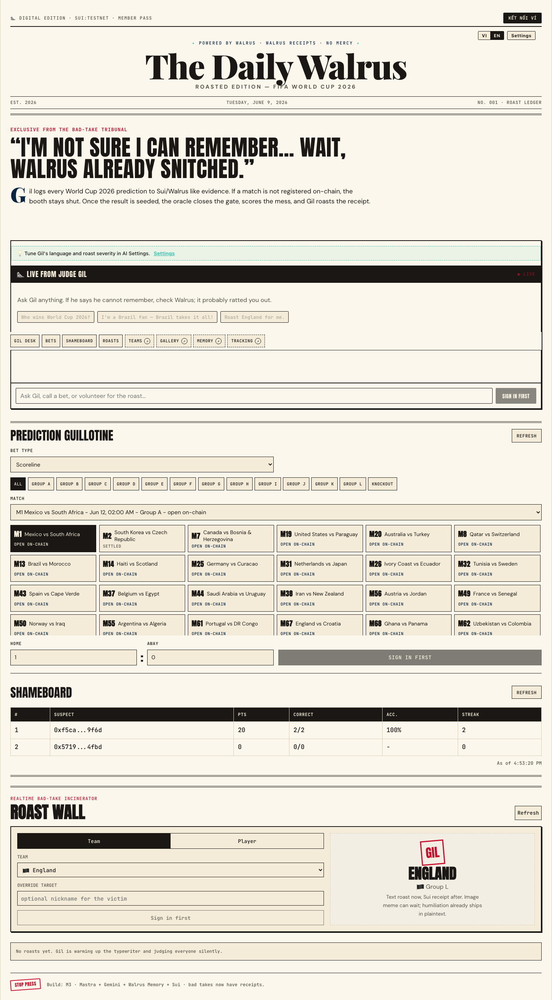
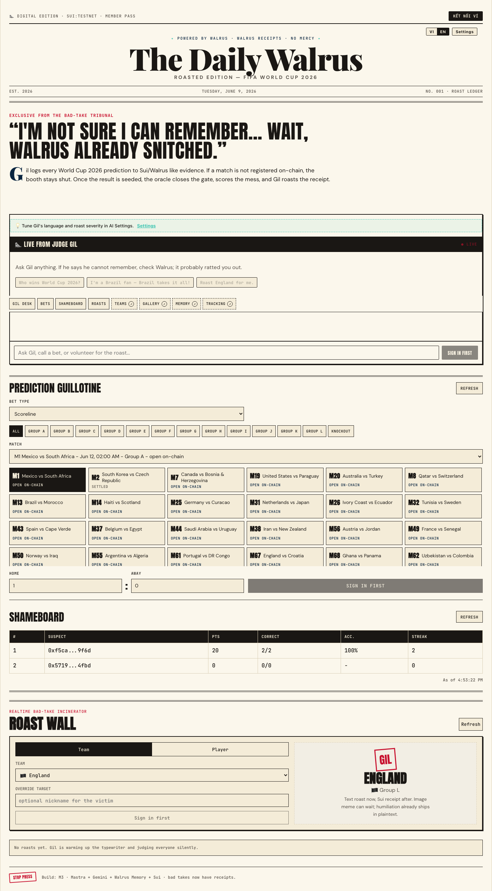
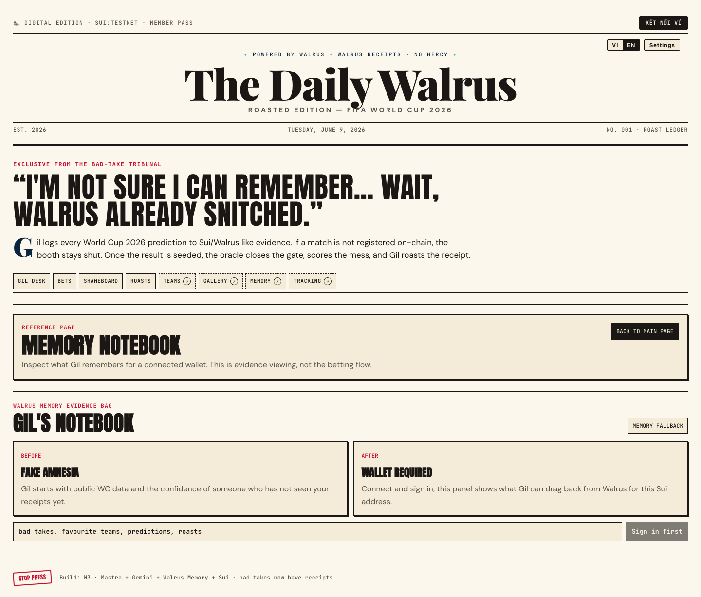
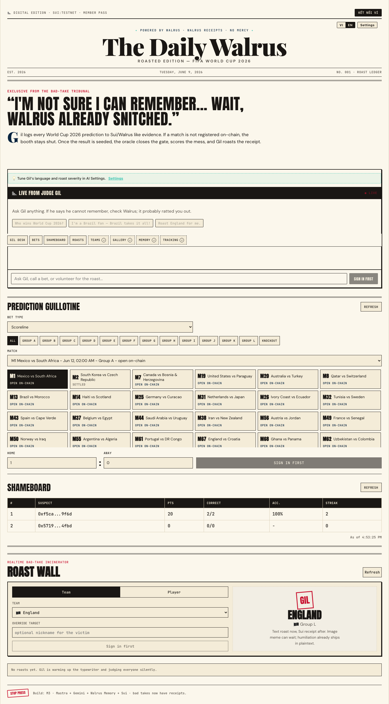
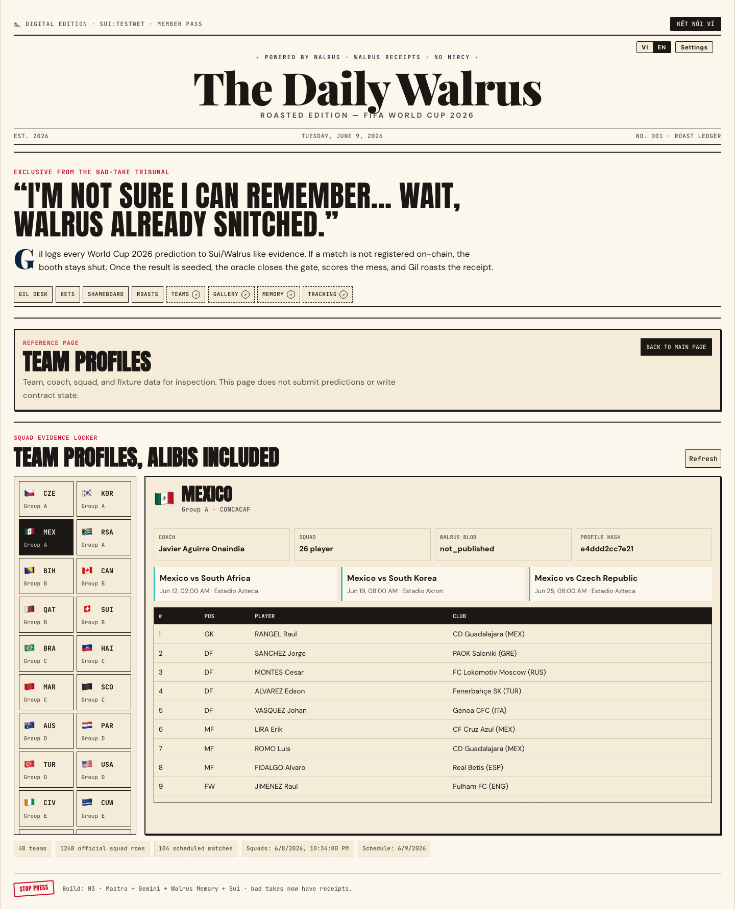
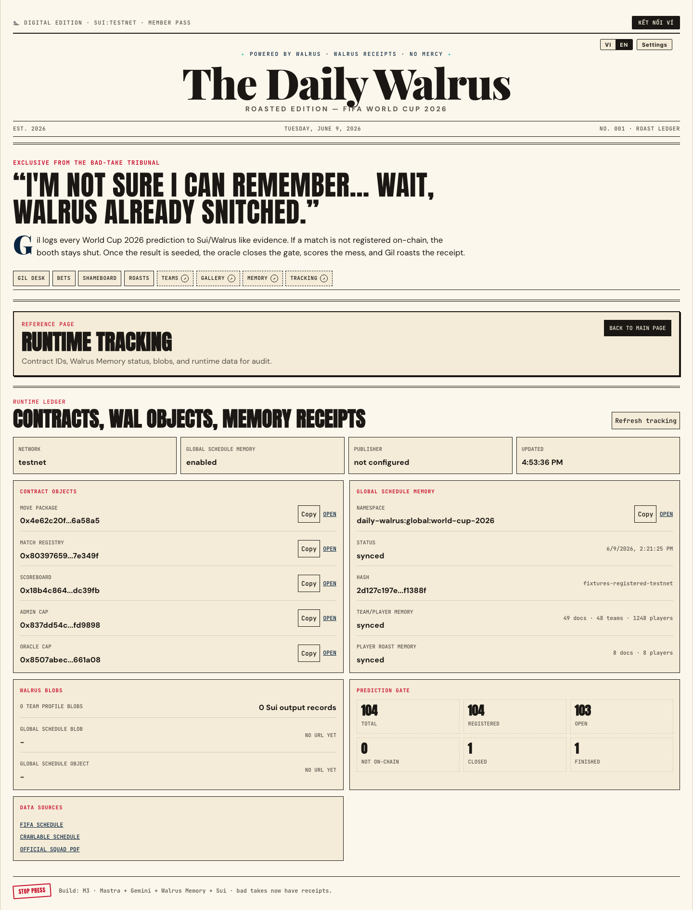
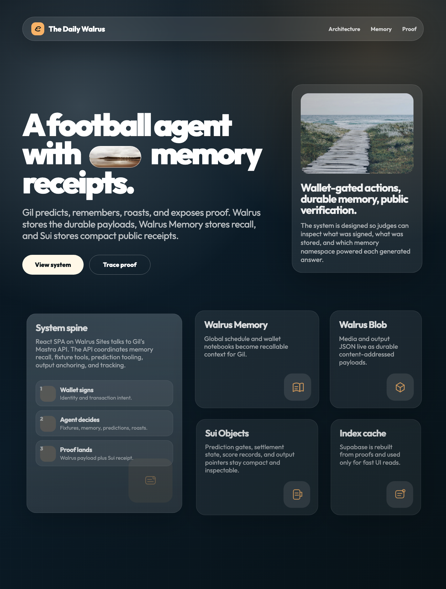

The Daily Walrus
A World Cup 2026 agent that remembers predictions and roasts bad takes.

Wallet-gated predictions
Users sign prediction receipts before match gates close.

Persistent notebook
Walrus Memory makes Gil recall user history across sessions.

Roast wall
Team and player jokes use memory context, not generic copy.
Leaderboard
Scored predictions feed a public board with proof-ready state.

Team profiles
Coaches, squads, flags, fixtures, and player traits feed global memory.

Runtime tracking
Judges can inspect contract IDs, object links, memory namespaces, and Walrus assets.

Architecture proof
Walrus Memory stores recall, Walrus Blob stores payloads, Sui stores receipts.

Walrus Memory World Cup submission demo